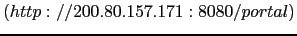

Next: Diagrama de un Contrato Up: DISEÑO DE PROCESOS E-LEARNING Previous: Determinación de Requerimientos
El diseño de transacciones e-learning retoma la misma idea y modelo propuesto por UWAT+ para el diseño de transacciones [7]. Partiendo de los resultados de la fase de Determinación de Requerimientos, fundamentalmente de la caracterización de los contratos, pueden ser seleccionados una series de transacciones, i.e., objetivos que requieran la ejecución de una o más Actividades para su cumplido. Para cada uno de los objetivos que incluya contrato deben ser diseñadas Transacciones e-learning (de igual forma que con las transacciones en UWAT+), los cuales en principio deben ser establecidos desde un punto de vista estático (en este trabajo no abordaremos tal consideración) y luego, desde un punto de vista dinámico por medio de un modelo de ejecución. En la figura 5 se muestra una porción del modelo de ejecución de un transacción e-learning cuyo contrato asociado fue caracterizado en la fase de Determinación de Requerimientos (figura 4, sección 5.1). En el diseño se describe el flujo de ejecución entre las Actividades de la transacción. El modelo de ejecución es una adaptación del diagrama de actividades de UML [11] en el que las Actividades y sub-Actividades están representadas por estados (óvalos), y el flujo de ejecución entre ellos se representa por medio de transiciones (arcos). Los óvalos con el sÃmbolo (*) - un asterisco etre paréntesis - refiere a una Actividad que representa a un conjunto de Actividades compuestas, y cuyo modelo de ejecución debe ser representado con otro diagrama. Un óvalo simple representa una Activiad Elemental. Un óvalo color griz indica una Actividad compuesta de las sub-actividad que se encuentra dentro. Una sub-Actividad representada con un óvalo color griz indica que es dependiente de la Actividad que la contiene, esto quiere decir que su ejecución estará acopañada por otra sub-Actividad y no puede ser incluida en otra composición. Los arcos de lineas continuas indican flujos de ejecución oblicagorio (transacciones hacia Actividades requeridas), mientras que los actos con lineas de puntos representan flujo de ejecuciones opcionales (transacciones hacia Actividades opcionales).
Cada relación posible entre actividades es representada por medio de una arco entre ellas. A cada arco se le asocia un texto que indica bajo que condiciones se produce la transacción, o el resultado de la ejecución de la Actividad de origen. Para describir como colaboran los usuarios de la aplicación en la ejecución de la Actitivades puede ser anexado un diagrama UML Swimlanes.
Cuando una Actividad ejecuta servicios implementados por contratos, entonces, se establece un arco saliente hacia un contrato. El contrato tiene un nombre, y entre paréntices se indican cuales son los objetos participantes (en el caso de tener ese tipo de información). Para represetarlo visualmente se utiliza el estereotipo del elemento componente de UML. Las Actividades que influyan en la modificación de los contratos en tiempo de ejecución se conectan a través de un arco de linea de puntos, igual a los utilizado en la representación de los flujos opcionales. Los detalles implementativos del contratos se detallan en un diagrama aperte, perteneciente a la fase descripta en la siguiente sección.
Por ejemplo, una de las opciones de la herramienta Foro de Obra Abierta  es la visualización de las intervensiones de los usuarios en el Foro. Un usuario docente puede seleccionar la opción "Foro" de la página principal de la Aplicación, luego seleccionar el tipo de "vista" (mediante un "comboBox") para ingresar en modo "browser" donde se muestran las intervenciones de los usuarios por temas. Una vez seleccionado el tema (por medio de la Actividad "Seleccionar Tema", figura 5), es posible ingresar al espacio de las intervenciones de los usuarios por medio de los roles de docente o alumno. Los docentes y alumnos tienen diferentes tipos de "vistas", permisos y servicios asociados (representadas en las actividades: "Visuazación de Intervensiones Docentes" y "Visualización de Intervensiones Alumnos"). A través del Browser (Actividad "Foro Browser") se recorre todo el contendido del espacio y al mismo tiempo puede ser seleccionado otro tema para visualizar.
En cambio, si la opción seleccionado es añadir o responder temas, se ingresa a una página Web configurada para editar texto (por medio de la Actividad "Adquirir servicios de escritura"). Algunos de los servivios de edición y configuración de opciones son implementadas a través del contrato "Edición" (representado por la figura de la componente UML, con el contorno color griz). El flujo de ejecución, luego de la intervención de los contrato, dependerán de las reglas de coordinación y se representan con los arcos salientes similares a los usados para representar las relaciones entre estados.
![\includegraphics[width=5 in,totalheight=4 in]{proceso.eps}](img10.png)